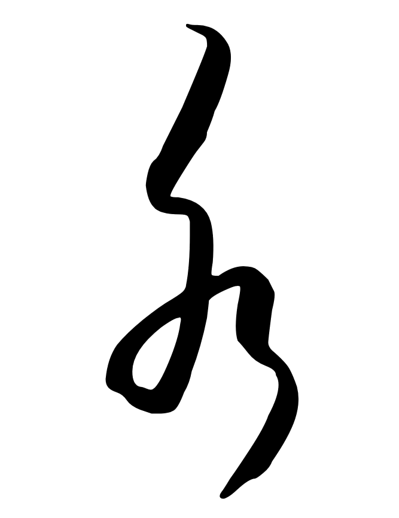
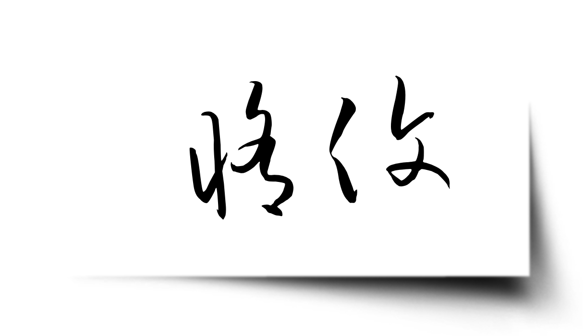

가슴 깊은 곳에서부터 불안이 밀려올랐다. 도대체 무슨 생각으로 종이를 그렇게 만지고 있었던 걸까? 아무 생각 없이 올려 두었던 손이 답안지 위에 너무 오래 머물러 있었다. 그녀는 천천히 손을 들어 올렸지만 이내 얼굴을 찡그렸다. 젖어 버린 종이가 손바닥에 달라붙어 얼룩을 따라 조용히 찢어졌다.
그녀는 스스로 인정하고 있었다. 최근 들어 조금 방심하고 있었다는 사실을. 체질 문제가 아니었다. 단지 경계심이 느슨해졌을 뿐이었다. 어차피 지금까지의 성적만으로도 그녀는 순위에서 압도적으로 앞서 있었다. 남은 몇 번의 시험은 사실상 큰 의미가 없었다. 물론, 말도 안 되는 재난이라도 벌어지지 않는 한 말이다. 지금처럼.
감독 교사의 목소리가 교실을 가르며 울렸다.
새 종이에 옮겨 적기에는 시간이 턱없이 부족했다.
‘아직 괜찮아.’ 에이번은 스스로를 다독였다. 손상은 아직 본문까지 번지지 않았다. 찢어진 것은 머리글과 제목 부분뿐이었다. “사라진 시대의 문자들.” 일그러졌지만 여전히 읽을 수 있었다.
바로 그 순간, 땀에 젖은 손바닥에서 물방울 하나가 떨어졌다. 툭. 종이 한가운데에 정확히. 그녀는 짜증스럽게 젖은 손을 치마에 문질렀다. ‘한 방울쯤이야. 금방 마르겠지.’ 그녀는 그 작은 물방울을 노려보았다.
그런데 이상했다.
물방울은 예상보다 훨씬 빠르게 줄어들더니 곧 흔적도 없이 사라졌다. ‘어?’ 그녀가 의아하게 바라보는 사이, 물방울 아래에 있던 글자가 서서히 주황빛으로 빛나기 시작했다. 다음 순간, 글자가 번쩍이며 불꽃이 튀어 올랐다.
급히 고개를 돌려 주변을 살폈지만 교실의 학생들은 모두 시험지에만 몰두하고 있었다. 그 사이에 작은 불꽃은 점점 원을 그리며 번져 나갔고, 종이에는 검게 그을린 구멍이 생겨났다. 그제야 그녀는 그 글자가 무엇이었는지 떠올렸다.

불. 그 문자는 불을 뜻하는 고대의 상형 문자였다.
멍해진 채 그녀는 그 광경을 바라보았다. 논리와 과학이 자리 잡기 전, 먼 옛날의 문자들. 시골 사람들은 이런 글자들이 단순한 의미 이상의 것을 담고 있다고 믿었다. 문자가 표현하는 개념의 본질 자체를 품고 있다고. 에이번은 늘 그런 이야기를 미신이라 여겼다. 적어도 지금 이 순간까지는.
그녀의 감탄 따위는 아랑곳하지 않고 불꽃은 계속 번져 나가며 소중한 문장들을 갉아먹고 있었다. 정신을 차린 그녀는 급히 다른 문자를 찾기 시작했다. 물을 뜻하는 글자였다.

거기 있었다.
잠시 망설이다가 그녀는 손가락을 그 글자 위에 가져갔다. ‘말도 안 돼.’ 그렇게 중얼거리면서도 그녀의 손끝은 이미 글자에 닿고 있었다.
글자에서 물이 솟구쳐 올랐다.
작은 원형 파동이 번지더니 종이 위로 물이 퍼져 나갔다. 에이번은 발로 책상을 살짝 기울였다. 책상이 삐걱거리며 움직였고 물이 불꽃 쪽으로 흘렀다. 몇 번이나 방향을 조정한 끝에 마침내 불꽃은 꺼졌다.
그녀는 아래를 내려다보았다. 엉망이었다. 주먹만 한 구멍이 뚫려 있었고 물이 번져 잉크가 흐릿하게 번지고 있었다.
감독 교사의 외침이 들렸다.
에이번의 머릿속은 미친 듯이 돌아가고 있었고 심장 역시 그에 맞춰 빠르게 뛰고 있었다. 이 기묘한 현상이 무엇이든 간에 지금 그녀를 구해 줄 유일한 방법이어야 했다. 하지만 어떻게? 그녀는 가능한 단어들을 떠올렸다.
하지만 그건 종이를 완전히 백지로 되돌려 버릴 것 같았다.
어딘가 어색했다.
결국 그녀는 답안지의 멀쩡한 구석에 크게 글자를 썼다.

땀으로 젖은 손바닥을 그 글자 위에 힘껏 눌렀다. 기적을 간절히 바라면서. 손바닥 아래에서 수분이 빨려 들어가는 것이 느껴졌다. 그리고 보이지 않는 파동이 글자에서 퍼져 나갔다.
마치 회복의 바람이 스쳐 지나간 것처럼 종이가 가볍게 펄럭였다. 젖은 얼룩이 말라가며 펴졌고 구겨졌던 종이가 매끄럽게 정리되었다. 불로 생겼던 구멍은 천천히 메워졌고 사라졌던 문장들이 다시 모습을 드러냈다. 처음 찢어졌던 자리까지 완전히 아물어 답안지는 다시 온전한 모습으로 돌아왔다.
“시간 종료입니다. 펜을 내려놓으세요.”
에이번은 의자에 몸을 기대며 길게 숨을 내쉬었다. 책상 위에 놓인 평범한 종이 한 장. 겉으로 보기에는 조금 전의 혼란이 조금도 남아 있지 않았다. 하지만 그녀는 알고 있었다.
오늘 이후로, 자신의 세계가 완전히 달라졌다는 사실을.